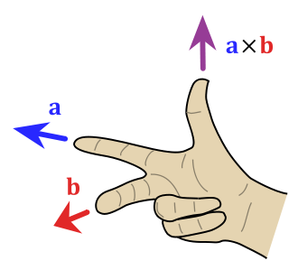

在3D游戏开发中，经常用到向量的点积和叉积及其几何意义，为防止遗忘，在此记录一下。
点积
在数学中，点积（德语：Skalarprodukt、英语：Dot Product）又称数量积或标量积（德语：Skalarprodukt、英语：Scalar Product），是一种接受两个等长的数字序列（通常是坐标向量）、返回单个数字的代数运算。在欧几里得几何中，两个笛卡尔坐标向量的点积常称为内积（德语：inneres Produkt、英语：Inner Product），见内积空间。
定义
点积有两种定义方式：代数方式和几何方式。通过在欧氏空间中引入笛卡尔坐标系，向量之间的点积既可以由向量坐标的代数运算得出，也可以通过引入两个向量的长度和角度等几何概念来求解。
代数定义
两个向量 $\vec{a} = [a1, a2,…, an]$和 $\vec{b} = [b1, b2,…, bn]$的点积定义为：
这里的Σ是求和符号，而n是向量空间的维数。
几何定义
在欧几里得空间中，点积可以直观地定义为
这里 $|\vec{x}|$ 表示 $\vec{x}$的模（长度）， $\theta$ 表示两个向量之间的角度。
叉积
在数学和向量代数领域，叉积（英语：Cross product）又称向量积（英语：Vector product），是对三维空间中的两个向量的二元运算，使用符号 $\times$。与点积不同，它的运算结果是向量。对于线性无关的两个向量 $\mathbf {a}$ 和 $\mathbf {b}$ ，它们的叉积写作 ${\mathbf {a} \times \mathbf {b} }$，是 $\mathbf {a}$ 和 $\mathbf {b}$ 所在平面的法线向量，与 $\mathbf {a}$ 和 $\mathbf {b}$ 都垂直。叉积被广泛运用于数学、物理、工程学、计算机科学领域。
定义
两个向量 $\mathbf {a}$ 和 $\mathbf {b}$ 的叉积仅在三维空间中有定义，写作 ${\displaystyle \mathbf {a} \times \mathbf {b} }$。在物理学中，叉积有时也被写成${\displaystyle \mathbf {a} \wedge \mathbf {b} }$，但在数学中 ${\displaystyle \mathbf {a} \wedge \mathbf {b} }$ 是外代数中的外积。
叉积 ${\displaystyle \mathbf {a} \times \mathbf {b} }$ 是与 $\mathbf {a}$ 和 $\mathbf {b}$ 都垂直的向量 $\mathbf {c}$ 。其方向由右手定则决定，模长等于以两个向量为边的平行四边形的面积。

叉积可以定义为：
其中$\theta$ 表示 $\mathbf {a}$ 和 $\mathbf {b}$ 在它们所定义的平面上的夹角（ ${\displaystyle 0^{\circ }\leq \theta \leq 180^{\circ }}$）。 ${\displaystyle |\mathbf {a} |}$ 和 ${\displaystyle |\mathbf {b} |}$ 是向量$\mathbf {a}$ 和 $\mathbf {b}$ 的模长，而 $\mathbf{n}$ 则是一个与 $\mathbf {a}$ 、 $\mathbf {b}$ 所构成的平面垂直的单位向量，方向由右手定则决定。根据上述公式，当$\mathbf {a}$ 与 $\mathbf {b}$ 平行（即 $\theta$ 为 0° 或 180°）时，它们的叉积为零向量 $\mathbf{0}$。

矩阵表示
叉积可以表达为这样的行列式：
这个行列式可以使用萨吕法则或拉普拉斯展开计算。使用拉普拉斯展开可以沿第一行展开为：
可以直接得到结果向量。
参考链接
- 叉积, by wikipedia.
- 数量积, by wikipedia.
- 向量点乘（内积）和叉乘（外积、向量积）概念及几何意义解读, by -牧野-.